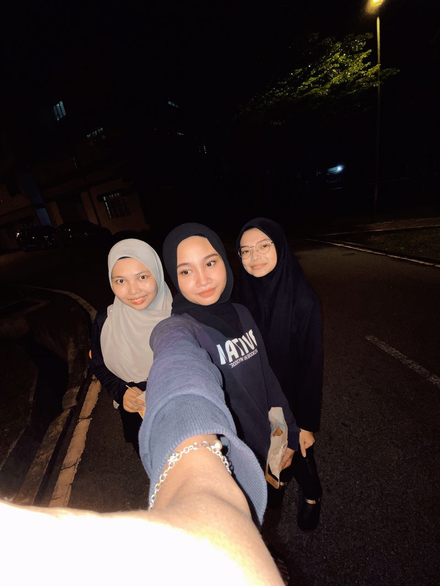

My friend
Nor Izzati Binti Mohd Shukri
My best friend is Nor Izzati. We both study in the same university. Nor Izzati also helps me in my studies. Nor Izzati lives in Junjung, Pulau Pinang. We are in the same ages. My best friend Nor Izzati and I spend most of the time together doing the things we like to do. We enjoy our life according to our needs and wishes.
My best friend is the person on whom I can truly count on all through my life. Whenever I need help or support, my best friend is always there for me.We have lived moments together and have created memories that will remain throughout my life.Having a best friend like Izzati makes my life easier. In any crucial situation, the first person that comes to my mind is my best friend. Whenever I am in any problem, my best friend helps me to get out of the problem by providing the best solutions. My best friend gets angry when I do something wrong and appreciates me when I achive something. She is very kind, heartless and introvert person.

Nur Najwa Syazwani Binti Abdul Aziz
My best friend is a girl named Najwa Syazwani. We both study in the same university. We grew up together. Our parents were friends from college and so they progressed to pursue the same career and that is how they ended up in the same neighborhood because they work in the same.
Since we were young, we would play together, went to school together. We were separated for about five year because she joined a different high school from mine. The separation made me realize that she was actually my best friend because it was hard without her around. My best friend and I are now in same university and in same classes. We interact on a daily basis.She is very kind, hardworking, extrovert and funny person.My best friend is a unique companion, the one among my friends who does the best things to me, for me and with me. She is simply indispensable and indescribable. She is not necessarily my lover but I love her.

My best friend is my first friend, an acquaintance, one who has offered me presence, wasted and utilized time with me, won my trust and respect, shown me love and why I should love, supported and defended me, had my back and stood by me. My best friend has not just done these things to me but has made me see reasons to do same to them.My best friend and I are a team, we struggle together, we lie together, we fight together, we save each other, we back one another and we survive in this order. We may not be one but we make one. We may not be so strong but united, we stand tall.In my times of need, my best friend has been a pillar of strength for me. Not only did he take care to see that I resolve my issues, but also ensured that my family is not affected much due to the turmoil in my professional life. He has always encouraged me to face problems as they are and not to duck under during adverse situations. I am glad that I have such a friend in my life on which I can rely on blindly.